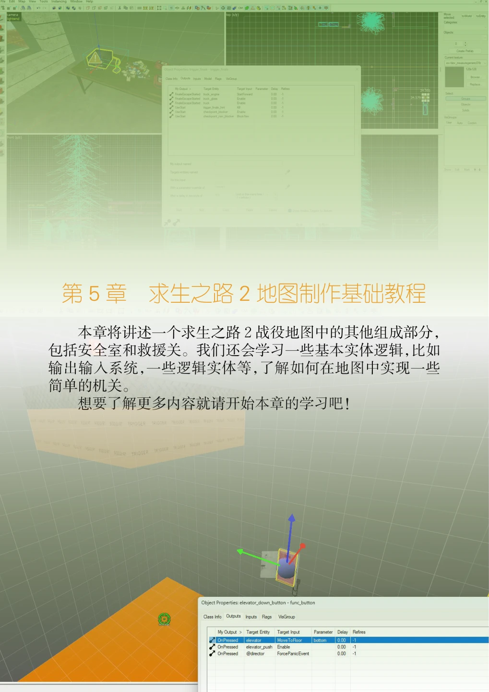
本章将讲述一个求生之路2战役地图中的其他组成部分，包括安全室和救援关。我们还会学习一些基本实体逻辑，比如输出输入系统，一些逻辑实体等，了解如何在地图中实现一些简单的机关。
想要了解更多内容就请开始本章的学习吧！
5.1 检查点（安全室）#
检查点（Checkpoint）是介于两个关卡之间的过渡区域，它根据需要加载对应的关卡。在游戏中称安全室（safe room）。玩家可以在这里得到修整，并做好下一关的准备。通过安全室，我们可以将整个战役拆分成多个地图，而不必把全部内容都做在一张地图内，同时地图也能做得更大，内容更丰富。玩家进入安全室后会卸载当前关卡并加载下一关卡。
下面我们来看看怎么做一个安全室。
5.1.1 要求#
一个安全室需要以下内容：
安全门实体——玩家用来进入安全室；
info_changelevel固体实体；
info_landmark点实体；
安全室内有标有CHECKPOINT生成属性的导航区域；
要加载的地图。
目标地图的要求：
安全门实体——玩家用来离开安全室；
与上一个地图中info_landmark实体的名称（目标名）相同的info_landmark实体；
安全室内有标有CHECKPOINT生成属性的导航区域。
通常来说，两个地图之间的过渡安全室是相同的，但这不是硬性要求（比如有些地图中转换关卡实际上是在外面某个地点集合，比如坐船，再传送到指定地点进行切换关卡，下一关就直接来到了新区域）。
5.1.2 创建安全门#
打开你在第 56 页上的「3.7 可见性（一）」 中创建的tutorial03.vmf，并另存为tutorial04.vmf。

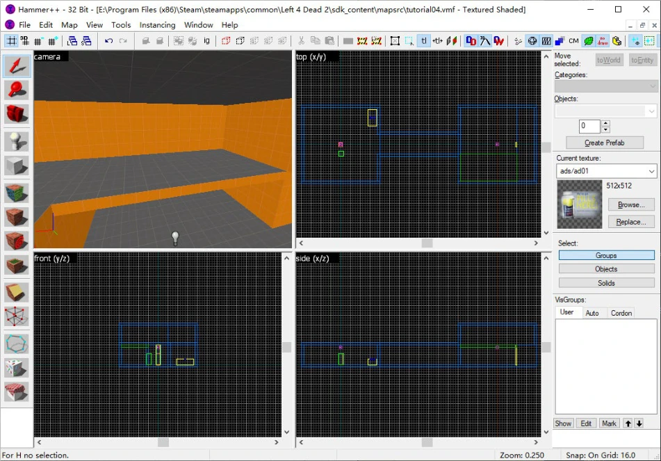
然后来到窗台位置。我们将在窗台旁边的墙上开一个洞，作为安全门。
选择实体工具，然后在对象栏里找到prop_door_rotating_checkpoint。在3D视图中，看向平台与墙壁相交的角落，然后点击鼠标左键放置实体。
接下来我们要设置安全门的模型。此时保持选中并按下Alt+Enter打开物体属性对话框，或者在选择模式下双击安全门实体以打开物体属性对话框。找到World Model键值，双击它，会弹出模型浏览器界面。在过滤器（filter）字样中输入「checkpoint」，找到后安全门模型，并点击OK确定选择，然后在物体属性对话框按下回车键或点击物体属性对话框下边框上方的「应用」按钮。你应该能够在3D视图中看到一个安全门。

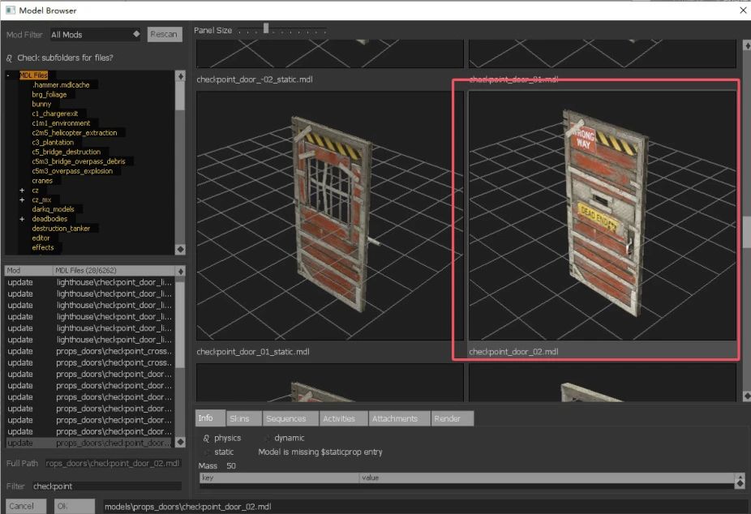

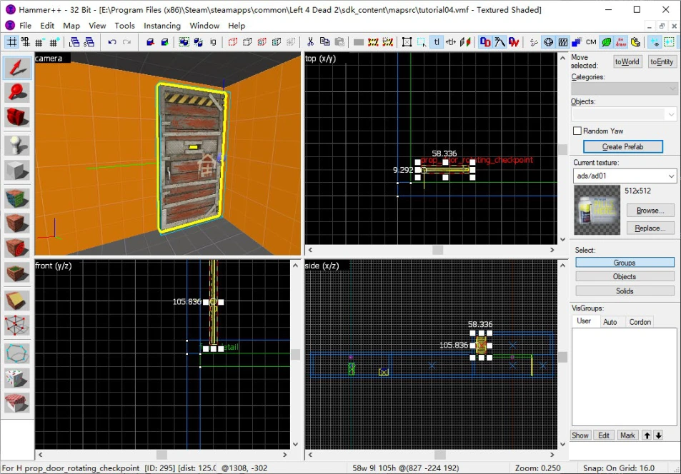
我们将学习使用剪切工具（Clipping tool）来「开洞」。剪切工具可以沿特定平面（称为切割平面）来切割选中的固体。在Hammer中，Hammer使用一条由在同一平面上的两个点确定的直线确定切割平面（这个平面总是与创建这条直线所使用的平面垂直），并沿该平面进行切割；在Hammer++中，切割平面由空间中的3个点确定。
返回到选择模式，然后在工具栏中选择 剪切工具或者按Shift+X来进入剪切模式（务必保持选中了至少一个固体）。在剪切模式下，通过点击剪切工具图标或者按Shift+X可以在这3种切割模式反复切换：切割左边（切割后把左边的删除，下同）、切割右边、切分固体（把固体一分为二）。在切割模式下，在网格中显示为红色的部分是将要删除的部分，而白色的是保留的部分。

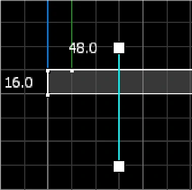

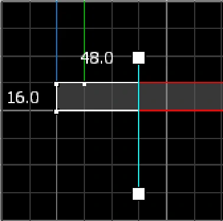

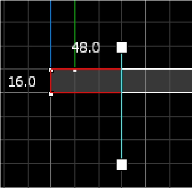
通过在网格上拖动，你可以创建一条经过两点的直线，切割工具会沿经过此直线且与此直线所在的平面垂直的平面切割。如果你是使用Hammer++，在其他视图上还存在着第三个点，通过三点确定切割平面。
确定了要如何切割固体后，按下回车键应用更改。
现在我们把安全门嵌入墙里，然后使安全门在侧视图上紧贴窗台：

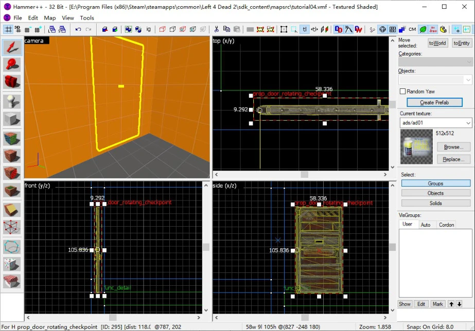
使用刚才学习的切割工具，给这面墙「开一个洞」。
开了洞之后，我们沿着门底所在平台延伸出去，创建一个房间，这个就是我们的安全室了。

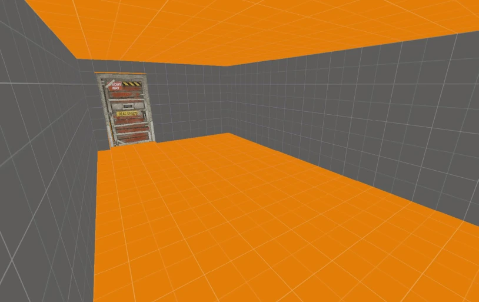
你可能注意到我的安全门有门框。事实上，在我们刚才搜索有关安全室的模型中，有doorframe字样的便是安全门的门框。图中使用的安全门门框是models/props_doors/checkpoint_doorframe_02. mdl。门框使用的实体是prop_static。如果你想要安全门和门框能够准确地放在一起，请把网格调到8单位或者16单位，然后只需要简单地把它们拖到一起即可。网格会帮你自动准确对齐。然后，把它们组合在一起，再一起移动到需要它们的位置。
如果你注意观察，你会发现安全室系列的模型的后面跟着一些数字和符号。现在让我来解释一下吧：
模型名称尾部数字是01的，表示这是前安全门（带门闩）相关的模型。如果是02，那就是后安全门相关的模型。如果数字前带个负号，表明这个模型和原本不带负号的模型的旋转轴位置相对。比如说，01编号的安全门的旋转轴，如果从带门闩的那个方向看向门，它的旋转轴是在右边的；那么-01的则是在左边。
图片也许更能让你理解：

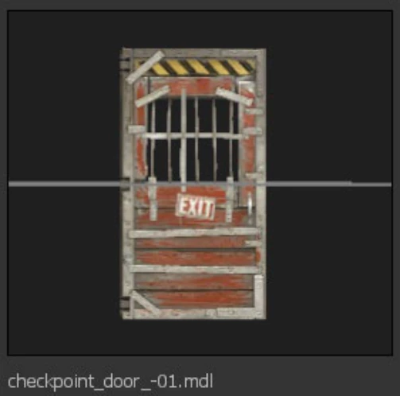

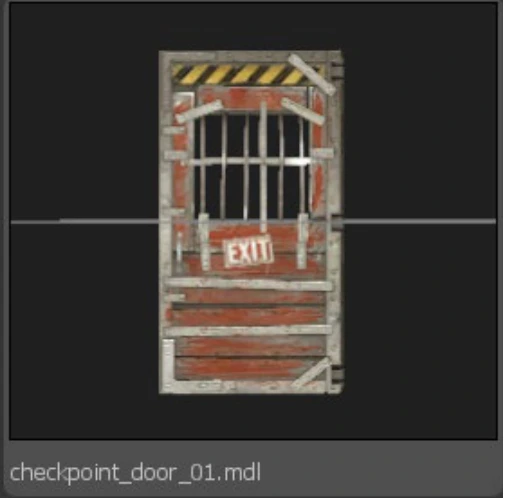
所以，提供的四个安全门是完全可以适应不同位置的需求的，对应的门框就使用和安全门的数字对应的那些，当然符号也要对得上。比如你使用了checkpoint_door_01.mdl，那么门框也要用checkpoint_doorframe_01.mdl。
有些安全门的名称里包含了一个static。我们知道，安全门的对应实体是prop_door_rotating_checkpoint，因此你不能使用包含static字段的安全门模型作为prop_door_rotating_checkpoint的模型。（自己试一试！）
强行使用带static的安全门模型是没有问题的。但是会导致你的安全门的行为和标准安全门的行为有区别，比如缺少开关门音效、前安全门的门栓直接和整个安全门一起移动而不是拿掉门栓再开门等。
现在让我们在与后安全门对角线相对的那一块地方创建我们的前安全门：

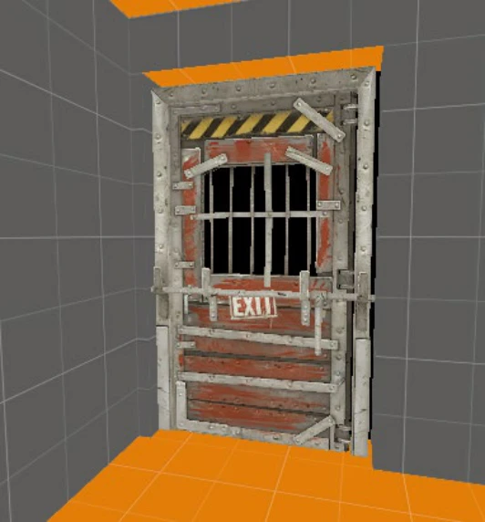

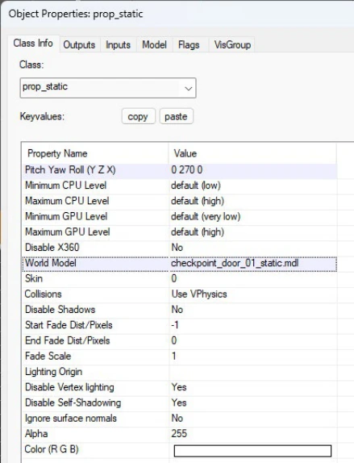
这里我们给门框和前安全门都使用prop_static实体，因为在目前的地图中，这个是终点安全室，所以它不应该是可交互的。同时刚才我们提到的带static字样的安全门模型就有用了——带static字样模型才能用于prop_static。
……（正在编写）
5.2 输入与输出#
输入（Inputs）和输出（Outputs）（统称为「I/O」）是指地图里的实体之间的通讯。
实体拥有两种通讯方法：发送一个「输出」给其他实体，或者从其他实体接收一个「输入」。当一个实体被Kill（移除）的时候，实体可以发送一个「输出」给其他实体的「输入」，使其改变颜色。相同的「输出」也可以用于触发另一个实体的刷出（spawning）「输入」。「输出」通过一个「连接」来匹配「输入」，它控制了哪些额外的数据被传送到接收者，在接收「输出」之前要延迟多久，并且「输出」是否允许稍后再次发送。「输出」可以连接到任何「输入」，反之亦然。这将允许实体间进行复杂，强大的互动。
以logic_timer实体为例：它可以配置为当达到时间限制时去「激活」OnTimer「输出」，「触发」（或叫「调用」）一个env_sprite上的ShowSprite「输入」。当定时器达到了时间限制时，动画会出现。通过配置连接属性，你也可以让「输出」延迟2秒后才触发，或者让其只能触发一次。
简单来说：通过输入输出，当满足一定条件时，你可以让一个实体告诉另一个实体要做什么。
5.2.1 输入#

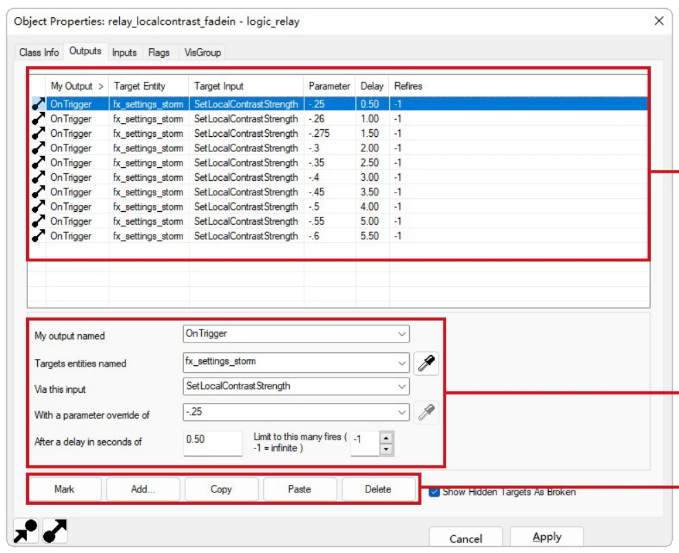
输入是让一个实体改变其工作的命令。他们由输出触发（或叫调用）——它们不能直接操作。
你可以查看一个实体能接收的输入事件的列表，这个列表里的项出现在物体属性对话框里的输入标签页（Inputs）里。单击标记（mark）按钮的话，将会显示出接收这个输入的实体（跳转到对应实体的输出选项卡）。
5.2.2 输出#
输出是当一个实体的状态改变时激活的事件。举个例子，一个定时器达到限定时间时会有一个输出，按下一个按钮时也会有一个输出，关闭一个门时同样也会有一个输出。
输出事件是在物体属性对话框里的输出标签页（Outputs）里创建的。这个界面允许你查看当前实体所拥有的输出列表，并允许你修改输出。
输出标签页包含3个区域：输出列表、配置区域、按钮。
- 1.输出列表①
这是一个表格，列出了当前实体所拥有的所有输出。你可以在这里选择一个或多个（按住Ctrl以多选）输出，并在配置区域或使用按钮对其进行修改。
除第一行外，每一行代表一个输出，有多少行就代表有多少个输出。表格有7列：
- •第一列指示输出是否有效；
- •第二列是输出名称（My Output）；
- •第三列是目标实体（Target Entity）；
- •第四列是输入名（Target Input）；
- •第五列是参数（Parameter）；
- •第六列是时间延迟（Delay）；
- •第七列是是否只激活一次（Once Only）［或在Hammer++中的激活次数（Refires）］。
- 2.配置区域②
- （1）输出名称（output name）（对应My output named）
决定什么事件能激活这个输出。例如，当一个玩家进入一个trigger_multiple实体，那么会激活一个OnTrigger输出。
- （2）目标实体（target entities）（对应Target entities named）
实体名称为目标名（targetname）a或类名（classname）的会接收输入。可以使用作为搜索通配符的*字符（例如LR_trigger*可以指向LR_trigger01、LR_trigger02、LR_triggerr、……）。
一个粗体的名字意思是目标名指向多个实体，即有多个实体的目标名重复了。
一个红色的名字意思是目标名没有指向任何目标。
- （3）输入名（input）（对应Via this input）
目标实体上的输入会被触发。这也是上下文相关的（你只能使用目标实体支持的输入名）。举个例子，如果发送一个输出给一个门实体，可用的输入将会是关闭（Close）或打开（Open）。
- （4）参数（parameter）（对应With a parameter override of）
你可以带参数将数据传送给目标实体。一个参数可以是任何东西：用多大的音量播放一个声音，另一个实体的目标名，或者是一个颜色。这一切都取决于接受什么样的输入。如果输入不使用参数，这个区域将会是灰色的。
- （5）时间延迟（time delay）（对应After a delay in seconds of）
在激活输出事件之前要等待多少秒。
- （6）只激活一次（Fire once only）/激活次数（Limit to this many fires）
如果勾选此项，在激活输出后，该输出会被删除。
如果使用Hammer++，这里将变成激活次数，可以控制输出能够被激活多少次。-1代表无限次（相当于原版Hammer中不勾选「只激活一次」）。
- 3.按钮③
- （1）标记（Mark）
选中输出时，点击Mark可以查看目标实体的物体属性对话框的输入标签页。
- （2）添加（Add）
创建一个新输出。
- （3）复制（Copy）
选中输出时，点击这个可以将输出复制，以便于后面粘贴。这也就意味着可以把一个实体的输出复制到另外一个实体。
- （4）粘贴（Paste）
将已复制的输出粘贴到当前实体的输出。
- （5）删除（Delete）
删除选中的输出。
5.2.3 实例#
这是一个如何使用输入和输出做一个简单的触发器的例子，当玩家进入一个指定的区域时播放声音。
- 1.打开一个地图，然后添加一个ambient_generic实体a［在名称（Name）区域里，键入ambient_1］。
- 2.打开它的物体属性对话框，选择一个要播放的声音文件b，之后在Flags标签页，复选Start Silent。
- 3.选择tools/toolstrigger贴图，然后用这个贴图创建一个方块固体。
- 4.在这个固体上右击，然后选择转换成实体（Tie to Entity）命令，然后将其配置为trigger_once实体。
- 5.打开输出标签页，然后点击添加（Add）按钮。
- 6.设置我的输出名（My output named）为OnStartTouch。 这样的话，在游戏里当玩家开始接触到这个固体时，就会产生一个输出（从而触发目标）。
- 7.使用下拉箭头设置目标实体名（Targets entities named）为ambient_1。 这会让触发器输出的目标指向你先前放置好的ambient_generic。
- 8.设置通过这个输入（Via this input）为PlaySound。 这会触发目标实体ambient_generic的动作列表里的PlaySound动作，让其开始播放声音。
- 9.点击应用（Apply）按钮来保存你对触发器的更改，然后关闭物体属性对话框。
现在我们已经设置了触发器，所以一旦玩家接触到它，它会发送一个命令给ambient_generic，让其开始播放声音。如果你查看ambient_generic的属性，你可以看到触发器的输出是如何自动转换成ambient_generic的输入的。
如果你想编译和测试你的新触发器，请确保你已经拥有了地图所需的东西（玩家出生点，光照等等），并且已经分配了一个声音效果给ambient_generic。
在后面的地图制作我们会经常使用输入输出系统。
- 习题13
- 一、选择题
- 1.小明制作地图时，希望玩家进入trigger_once区域后，延迟 2 秒再让ambient_generic（命名为sound_alert）播放警报声。他在配置trigger_once的输出时，哪项操作能实现「延迟 2 秒」的需求？（ ）
A. 在「参数（Parameter）」栏填写「2」 B. 在「时间延迟（Delay）」栏填写「2」
C. 在「激活次数（Refires）」栏填写「2」 D. 将「输出名称（My Output）」设为
「OnDelay2」
- 2.小李用 Hammer++ 制作地图，给logic_timer添加了一个输出，希望「每次定时器到点都能触发env_sprite显示动画，无触发次数限制」。他应在「激活次数（Limit to this many fires）」栏填写什么值？（ ）
A. 0 B. 1 C. -1 D. 99
- 3.小张在配置func_door（门实体）的输入时，发现可用的输入选项只有「Open」和「Close」，无法选择「PlaySound」。这一现象的原因是？（ ） A. 该门实体没有设置「名称（Name）」 B. 输入是「上下文相关」的，仅显示目标实体（门）支持的输入
C. Hammer 软件版本过低，缺少「PlaySound」输入选项
D. 门实体被设置为「不可交互」，限制了输入类型
- 4.小王在配置trigger_multiple的输出时，发现「目标实体（Target Entity）」栏显示为红色，他担心配置无效。以下哪种情况导致的红色目标名是正常可用的？（ ）
A. 目标名填写为!activator
B. 目标名填写为light_main，但地图中无该名称的实体
C. 目标名填写为box_*，但地图中无任何以box_开头的实体
D. 目标名填写为door_01，且地图中有 3 个实体都叫door_01
- 5.小刘想让「math_counter（计数器）数值变化后，直接将当前数值传递给func_text（文字实体）显示」。在配置math_counter的输出时，「参数（Parameter）」栏应如何设置？（ ）
A. 填写math_counter的名称 B. 填写func_text的名称
C. 填写<none> D. 填写「ShowValue」
- 6.小陈在配置ambient_generic的输入时，发现「参数（Parameter）」栏是灰色的，无法填写内容。这最可能的原因是？（ ）
A. 该ambient_generic没有绑定声音文件
B. 触发该输入的输出未设置参数
C. 该输入本身不需要参数（如部分场景下的PlaySound）
D. Hammer 软件出现 bug，需重启修复
- 7.小周制作「按下按钮打开所有以door_开头的门」的功能，门实体均为func_door。在配置按钮的输出时，「目标实体（Target Entity）」栏应填写什么？（ ）
A. door_01, door_02, door_03
B. func_door（门实体的类名）
C. door_*
D. !all_doors（自定义特殊目标名）
- 8.小吴想查看「实体 A 的输出连接到了哪个实体的输入」，他应使用 Hammer 输出标签页中的哪个按钮？ （ ）
A. 选中实体 A 的输出，点击「Mark」，跳转到目标实体的「输入标签页」
B. 选中实体 A，点击「Copy」，粘贴到目标实体后查看输入
C. 选中实体 A 的「输入标签页」，点击「Add」，手动查找关联实体
D. 直接右键实体 A，选择「查看关联输入」
- 9.小林用原版 Hammer 制作地图，给trigger_once的输出勾选了「只激活一次（Fire once only）」。这一设置会导致什么结果？（ ）
A. 该输出只能触发一次，触发后需手动重新启用 B. 该输出只能触发一次，触发后会被自动
删除
C. 所有连接到该输出的输入，只能接收一次信号 D. 该输出会重复触发，但每次触发间隔增
加 1 秒
- 10.小郑在测试地图时，发现「玩家进入trigger_once区域后，ambient_generic没有播放声音」。他已确认ambient_generic中声音文件的配置是正确的，且输出配置为「目标实体：ambient_1，输入名：PlaySound」，以下哪项最可能是故障原因？（ ） A. trigger_once的输出名称设为「OnEndTouch」 B. 输出的「时间延迟（Delay）」设为 0 C. ambient_generic的「名称（Name）」设为「ambient_01」 D. 输出的「激活次数」设为 1
- 11.小冯在配置输出列表时，发现「目标实体（Target Entity）」栏的名称显示为粗体。这代表什么含义？（ ） A. 该目标名是实体的类名（如func_door） B. 该目标名指向多个实体（有多个实体的目标名重复） C. 该目标名是特殊目标名（如!activator） D. 该目标名配置错误，游戏无法识别
- 12.小韩想将实体 A 的输出「复制」到实体 B（两者输出逻辑完全相同），正确的操作步骤是？（ ） A. 选中实体 A 的输出→点击「Copy」→选中实体 B并转到输出标签页→点击「Paste」 B. 选中实体 A→点击「Mark」→选中实体 B并转到输出标签页→点击「Add」 C. 直接拖拽实体 A 的输出到实体 B 的输出列表 D. 重新为实体 B 手动配置与实体 A 完全相同的输出
- 13.小蒋用logic_timer控制env_sprite的显示，希望「定时器每 30 秒触发一次env_sprite的ShowSprite输入」。在配置logic_timer的输出时，「输出名称（My Output）」应选择哪项？（ ） A. OnStartTouch B. OnTimer C. OnTrigger D. OnShow
- 14.小宋在配置输出时，需要将「某个实体的目标名」作为参数传递给目标实体。他需要特别注意什么？（ ） A. 目标名必须是英文，不能包含中文 B. 目标名可能不是唯一的，需确认实体名称唯一性 C. 参数栏只能填写数字，无法填写目标名 D. 必须先将目标实体的类名填写到参数栏
- 15.小朱想让「func_door被关闭时，触发ambient_generic播放『门关闭』的音效」。在配置func_door的输出时，「输出名称（My Output）」应选择哪项？（ ） A. OnClose B. OnOpen C. OnTrigger D. OnKilled
- 二、填空题
- 16.输入与输出（I/O）的核心作用是实现地图中________之间的通讯，其中「输出」通过「连接」控制额外数据传递、触发延迟及是否允许再次发送，从而实现实体间复杂的________。
- 17.在 Hammer 的输出列表表格中，除标题行外，每一行代表一个输出，表格共包含________列，其中第 6 列用于设置「________」（填写列的功能）。
- 18.若需使用math_counter等实体自身生成的参数，需在输出的「参数（Parameter）」栏设置为________，而非手动填写数值。
- 19.在 Hammer++ 中，「激活次数（Limit to this many fires）」的取值为________时，代表输出可「无限次触发」，与原版 Hammer 中「不勾选『只激活一次』」的效果一致。
- 20.在「玩家进入区域播放声音」的实例中，trigger_once的「输出名称（My Output）」需设置为________，才能确保玩家「开始接触固体时触发输出」。
5.3 恐慌事件#
恐慌事件（panic event）（俗称尸潮）是设计者让感染者成群出现在某一时刻的场合。在求生之路1中，你只能对他们出现在哪里进行有限的控制，但你至少可以控制他们的产生。
但是，在求生之路2中，得益于VScript系统，你可以通过导演脚本来自定义恐慌事件——你可以控制尸潮的规模、刷新方位、刷新间隔等等。但这些不是本节的内容。
恐慌事件的例子是在毫不留情（No Mercy）战役的第二张地图中启动发电机时，在毫不留情的第三张地图中乘坐升降机时，以及在毫不留情的第四张地图中呼叫电梯时。
5.3.1 组成内容#
一个恐慌事件通常由以下内容组成：
- •info_director实体
- •任何能够与玩家互动并向其他实体「发送指令」的实体（如func_button）
- •恐慌事件的活动区域、场景
- •引发恐慌事件的具体事件（如呼叫电梯、摧毁路障等）
- •在恐慌事件的活动区域内的物资、补给
恐慌事件的本质是向info_director实体发送PanicEvent输出、ForcePanicEvent输出等，来命令导演刷新尸潮。